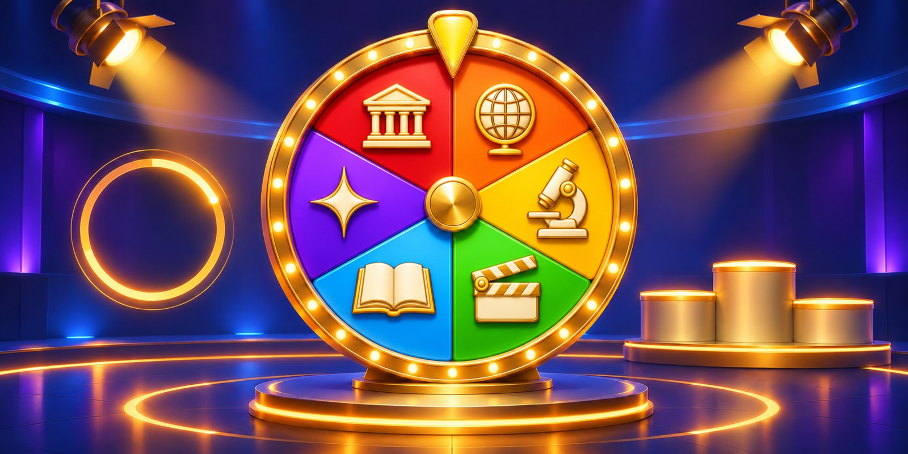

QuizArena

Game-show style quizzes to play in the browser, on your own, with friends or live.
Play nowWhat problem it solves
A quiz anyone can open in the browser, with nothing to install, to play alone or challenge friends. There's also a "game show" mode designed for live social streams, where the audience answers in the chat.
Who it's for
Anyone who wants to play a free quiz, groups of friends, and streamers who want to engage their viewers.
What it does
- Questions by category chosen with a wheel, timer, scores, leaderboard and a final big question, the "Domandone".
- Three ways to play: solo, a match with friends (invite with a code, a link or a QR code), or live.
- Four languages: Italian, English, French and Romanian, with over 1,600 verified questions.
Business model
Free version with no sign-up. A PRO subscription version (more questions, private matches for up to 10 players, no ads) is ready and in testing but not yet live. A separate line is designed for streamers.
Technologies
TypeScript, React and Vite for the interface; a "real-time" server that keeps all players in sync (WebSocket); SQLite database; payments through Paddle (an external service: card details never pass through the site); connection to live social stream chats.
My role
I designed the product and the way it's played, defining its commercial policies (free version, subscription, line for streamers).
I coordinated the development of the code with the help of ChatGPT.